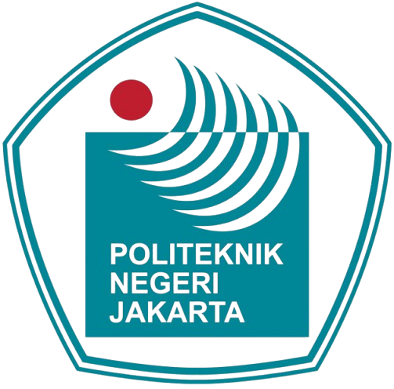

Tentang PPM AFM


Pondok Pesantren Mahasiswa (PPM) Al-Faqih Mandiri adalah pondok pesantren bagi para mahasiswa/i yang berkuliah di Depok dan sekitarnya serta memiliki tujuan untuk mencetak sarjana yang profesional religius serta berperan aktif dalam perjuangan dan dakwah.
🕌 Kegiatan PPM AFM:
- Sesi Al-Quran dan Hadits dengan Guru setelah Subuh dan Setelah Isya (2x sehari)
- Ibadah Solat Tahajjud Setiap Selasa dan Jumat Malam
- Nasihat Ba’da Maghrib setiap hari Senin dan Rabu
- Piket Totalan (Bersih-bersih Asrama) Setiap Hari Sabtu
- Kegiatan silat ASAD
- Dan lainnya
Ingin Tahu PPM AFM Lebih Banyak?
Lihat Lebih Banyak di Tentang AFMKampus-kampus Ternama Sekitar

5
Dewan Guru
92
Total Santri
44
Santriwan
48
Santriwati
*Data per Januari 2025
Lokasi Strategis Kami
Alamat:
Jl. Sawo No.33b, Pondok Cina, Kecamatan Beji, Kota Depok, Jawa Barat 16424
Email:
ppm.alfaqihmandiri[AT]gmail.com
No. Telepon:
+62 858-8268-5011
Jam Operasi:
Senin - Sabtu: 6AM - 10PM